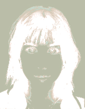
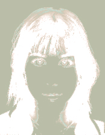

JE M’APPELLE INES DALSBAEK, JE SUIS ETUDIANTE EN MENTION DESIGN WEB EN BELGIQUE.
 

1Ma curiosité pour de nombreux médias artistiques m'a permis de développer un profil polyvalent
2Ma curiosité pour de nombreux médias artistiques m'a permis de développer un profil polyvalent